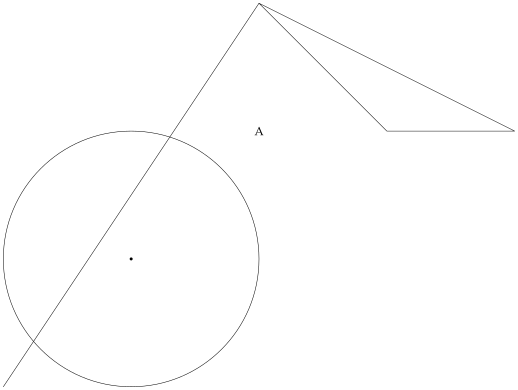
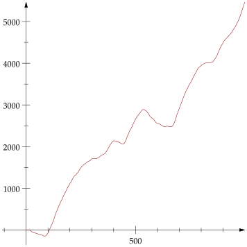
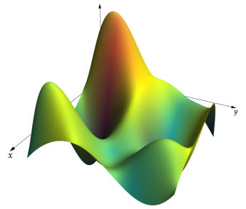

Overview
Primitives
A figure in AsyPlots consists of a list of graphics primitives wrapped in a Plot. The primitives are Point, Path, Polygon, Circle, Label, and Surface.
using AsyPlots #
L = [Path([-1 -1; 1 2]),
Point(0,0),
Circle((0,0),1),
Label("A",(1,1)),
Polygon([2+im,3+im,1+2im])]
Plot(L)
Drawing options
Drawing instructions for each primitive may be supplied via keyword arguments. Properties like color, opacity, line width, and font size are packaged in a Pen object. A Path may also be given an Arrow.
L = [Path([-1 -1; 1 2],pen=Pen(color="Purple",linewidth=3),arrow=Arrow(12)),
Point(0,0,pen=Pen(color="DarkRed",linewidth=3)),
Circle((0,0),1,fillpen=Pen(color="Blue",opacity=0.4)),
Label("A",(1,1),pen=Pen(fontsize=14)),
Polygon([2+im,3+im,1+2im],pen=NoPen(),fillpen=Pen(color="MidnightBlue"))]
Plot(L)
Keyword arguments to Pen may be given directly to the underlying primitive, in which case they are automatically wrapped into a Pen object:
Point(0,0,color="Green",linewidth=2).penPen(color=Green,linewidth=2)Options applicable to the whole figure can be specified as keyword arguments to Plot.
Plot(L,axes=true,axisarrow=Arrow(),bgcolor="gray",width=250)
plot
A convenience function plot is available for graphing arrays without having to work directly with graphics primitives. Keyword arguments are separated according to whether they are appropriate for the Plot or the Path/Surface object.
y = cumsum(cumsum(randn(1000)))
plot(y,pen=Pen(color="DarkRed"),axisarrow=Arrow())
using LaTeXStrings
z = randn(5,5)
plot(z,xmax=4.5,ymax=4.5,xlabel=L"$x$",ylabel=L"$y$",width=250)
interactive(P::Plot3D) opens a window for 3D graphic manipulation
interactive(plot(randn(5,5)))